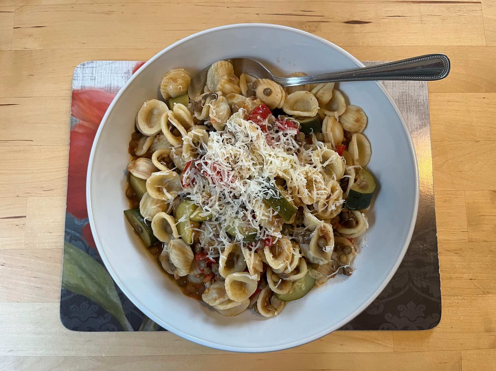

Veggie goodness - as invented while on holiday to complement all those pasties.

Ingredients
350g pasta of your choice
150g dried beans (or lentils)
2 zucchini
1 red pepper
5-6 tomatoes
Olive oil and black pepper
Lots of parmiggiano
Soak the dried beans for at least 8 hours before boiling them in some salted water for about 40
minutes (as described in the notes).
Dice onion and fry in some olive oil.
Chop up the rest of the veggies and add to the onion.
Simmer until a sauce is formed, about 15min (adding salt and black pepper to taste).
Boil the pasta water and cook the pasta as per the required time, remembering to salt the water
once the pasta is in.
Add in beans (or lentils) to the veggie mix once they are cooked.
Combine with pasta and add more olive oil if needed.
Finish with a generous sprinkling of parmiggiano.